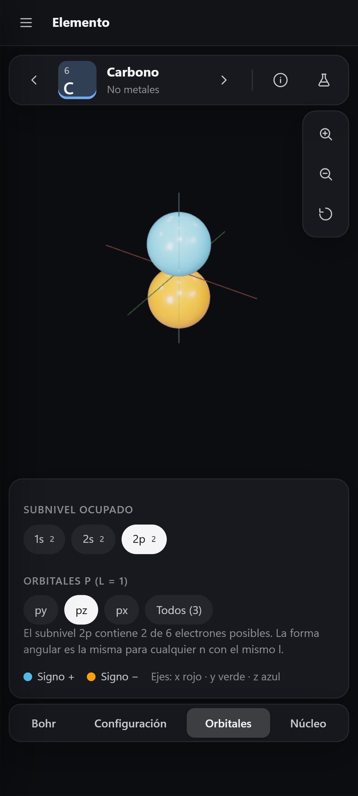
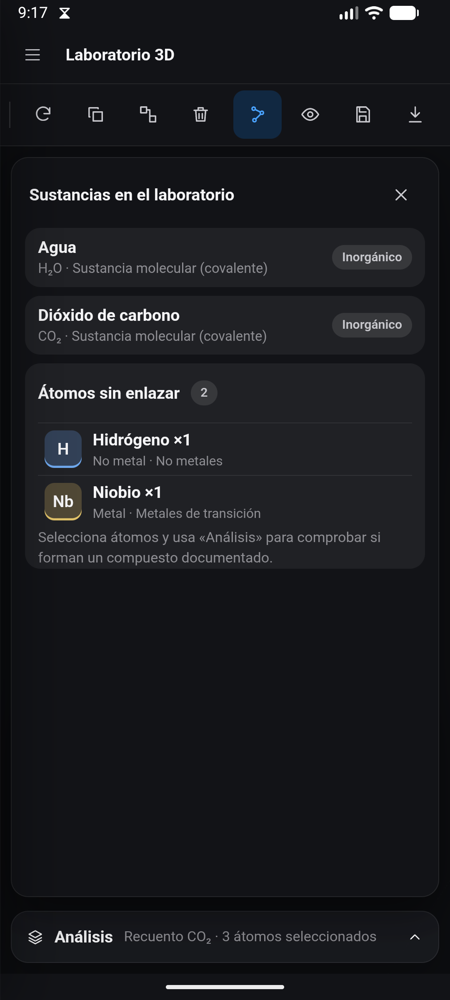
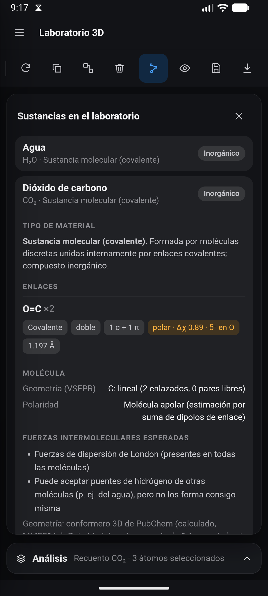
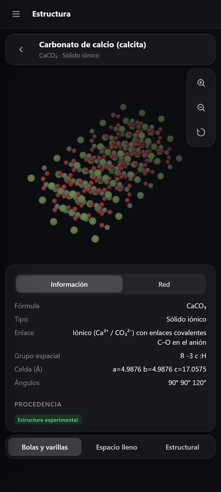
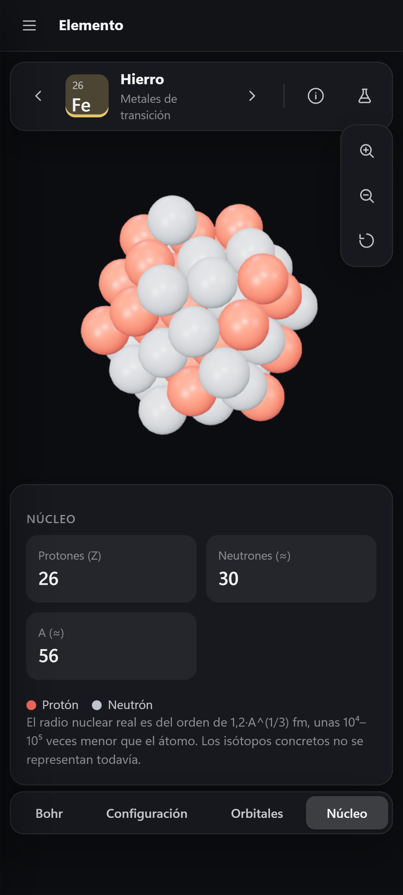
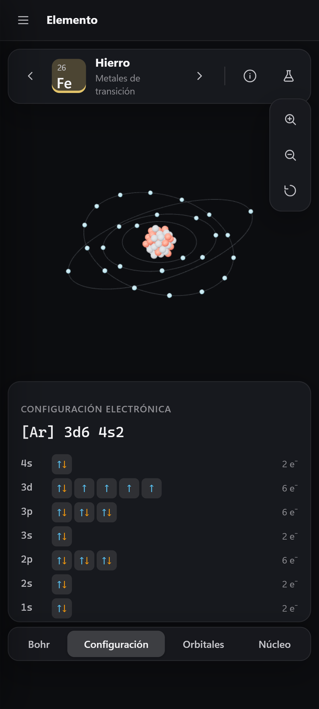
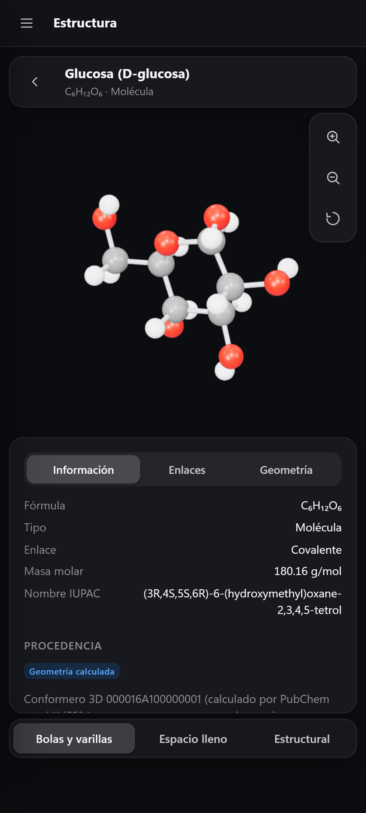
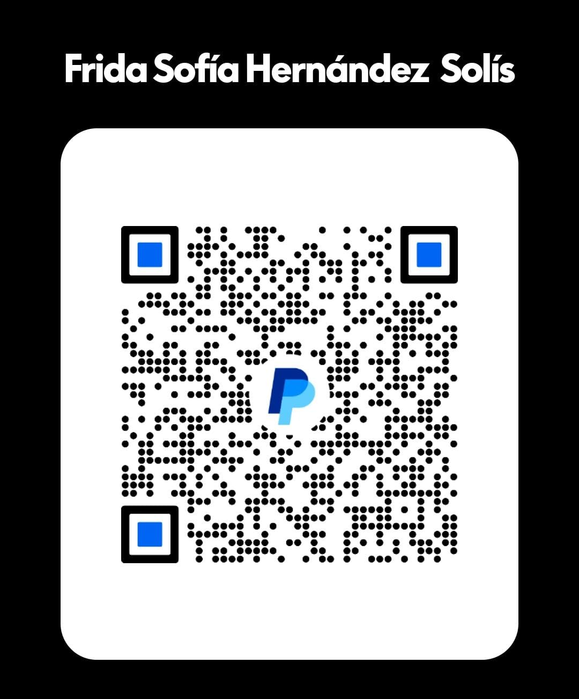

Cada átomo, por dentro
Cuatro formas de ver un elemento: modelo de Bohr con sus capas, configuración electrónica con diagramas de cajas (Hund y Pauli), orbitales s, p, d y f en 3D y el núcleo con sus protones y neutrones.

Química 3D es un laboratorio de bolsillo: explora los 118 elementos, mira por dentro cada átomo, forma moléculas documentadas y calcula como un químico. Todo con datos científicos verificables.
Geometría: conformero 3D de PubChem (calculado, MMFF94s). Los mismos datos que usa la app.
Pensada para estudiantes, docentes y curiosos. En lugar de memorizar una tabla plana, tocas un elemento y ves su átomo girar frente a ti; acercas dos átomos y la app te dice, con fuentes, si forman un compuesto real y qué tipo de enlace los une.
Cuatro formas de ver un elemento: modelo de Bohr con sus capas, configuración electrónica con diagramas de cajas (Hund y Pauli), orbitales s, p, d y f en 3D y el núcleo con sus protones y neutrones.

Coloca átomos, mide distancias y ángulos, y comprueba si una combinación forma un compuesto documentado. Los átomos nunca se unen “porque sí”.
Para cada sustancia: enlace covalente, iónico, metálico o coordinado; simple, doble o triple; σ y π; polaridad por Δχ y fuerzas intermoleculares.
Escribe una fórmula y obtén masa molar, composición porcentual y estados de oxidación. Ajusta ecuaciones con fracciones exactas, resuelve estequiometría con reactivo limitante, conversiones, disoluciones y fórmula empírica. Y con un toque, lleva el resultado al laboratorio.
Moléculas con geometría de PubChem y cristales como la sal (NaCl), el cobre o la calcita con datos experimentales de la Crystallography Open Database.
Lecciones cortas de estructura de la materia, átomo, isótopos, configuración y tabla periódica, con retos y enlaces directos a la vista 3D.
Gestos táctiles, modo oscuro, botón atrás de Android y funcionamiento sin conexión. Guarda y exporta tus experimentos.






Muchas apps de química dibujan moléculas bonitas pero imprecisas. Química 3D sigue una regla: si un dato no tiene fuente, no se muestra como si fuera real.
La app ya funciona en Android. Lo que falta para que cualquiera pueda descargarla es publicarla y probarla a fondo. Tu donación va directamente a eso.
El registro obligatorio para publicar apps en la tienda.
Que funcione fluida en equipos de gama baja y alta, no solo en el emulador.
Más moléculas, cristales y lecciones, siempre con fuente.
Correcciones, actualizaciones de Android y nuevas funciones.
Cualquier cantidad ayuda. Si no puedes donar, compartir esta página también suma muchísimo.

En cuanto se cubran la cuenta de desarrollador y las pruebas en dispositivos reales. Esta página anunciará el lanzamiento.
La meta es que cualquier estudiante pueda usarla. Por eso el proyecto se apoya en donaciones voluntarias y en fuentes de datos abiertas.
No. Los datos de los elementos y las moléculas van dentro de la app, así que funciona sin conexión.
De PubChem (Biblioteca Nacional de Medicina de EE. UU.) para elementos y moléculas, y de la Crystallography Open Database para estructuras cristalinas. Cada dato indica si es de la fuente, calculado, una predicción o una aproximación.
El primer objetivo es Android. La app está construida con tecnologías web y Capacitor, así que una versión para iOS es posible más adelante.